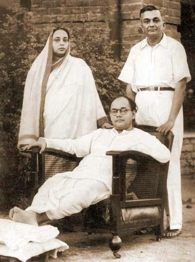

TRIBUTE TO OUR NATIONAL HERO: Netaji Subhash Chandra Bose
"Early Life of S. C. Bose"
Subhash Chandra Bose was born to Mrs. Prabhavati Devi and Mr. Janakinath Bose on January 23 in 1897 in Odisha. He took admission into the Protestant European School which was run by the Baptist Mission. He did B A in Philosophy from the Presidency College in Calcutta, and was later expelled for assaulting Professor for the latter's anti-India remarks. After the incident, Bose was considered as one of the rebel-Indians. During his college days, he gradually developed nationalistic temperament, and became socially and politically aware. He found Britishers' insults to Indians in public places as offensive. In December 1921, Bose was arrested and imprisoned for organising a boycott of the celebrations to mark the Prince of Wales’s visit to India. Mr. Bose left for England in 1919 to appear for Indian Civil Service Examination.
